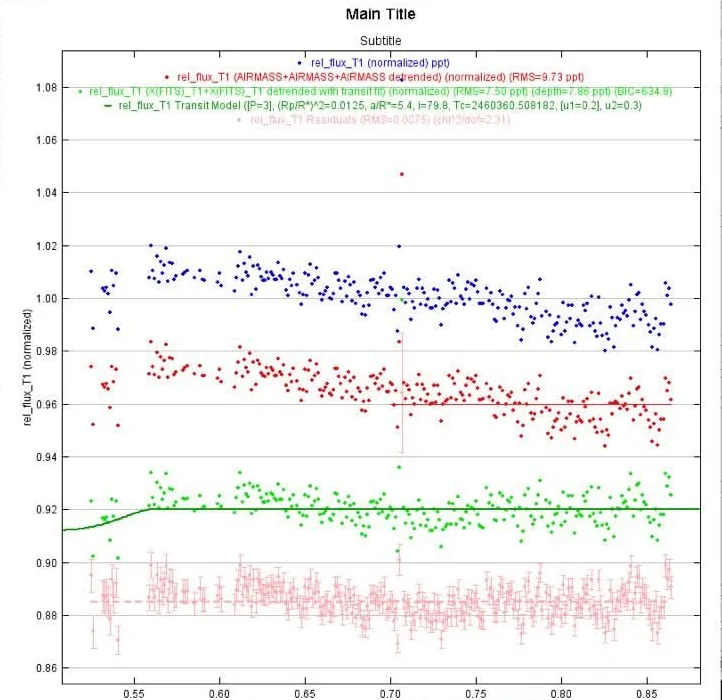
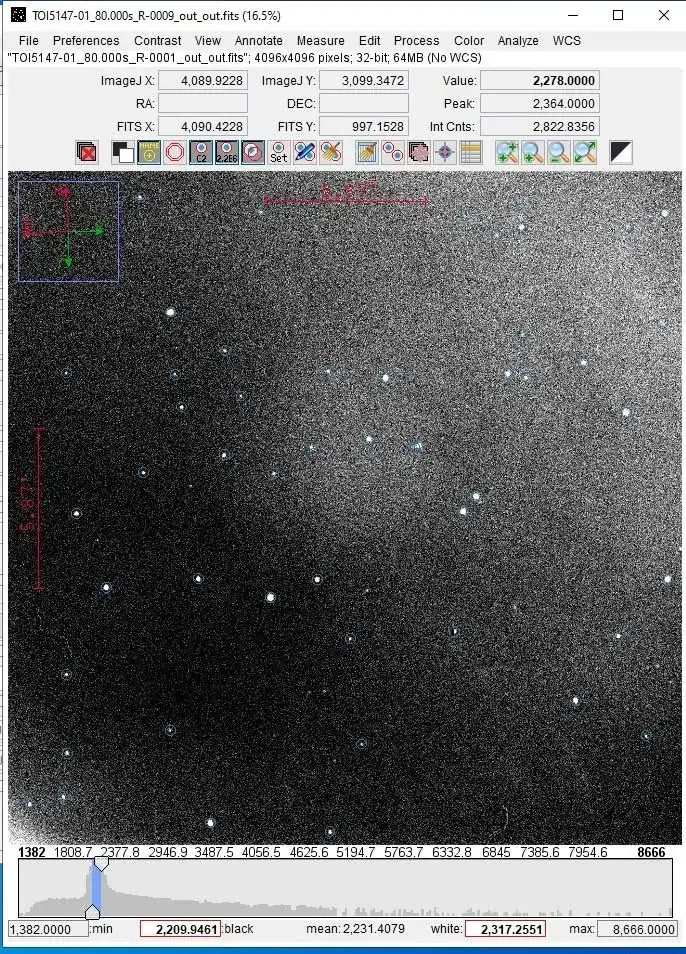
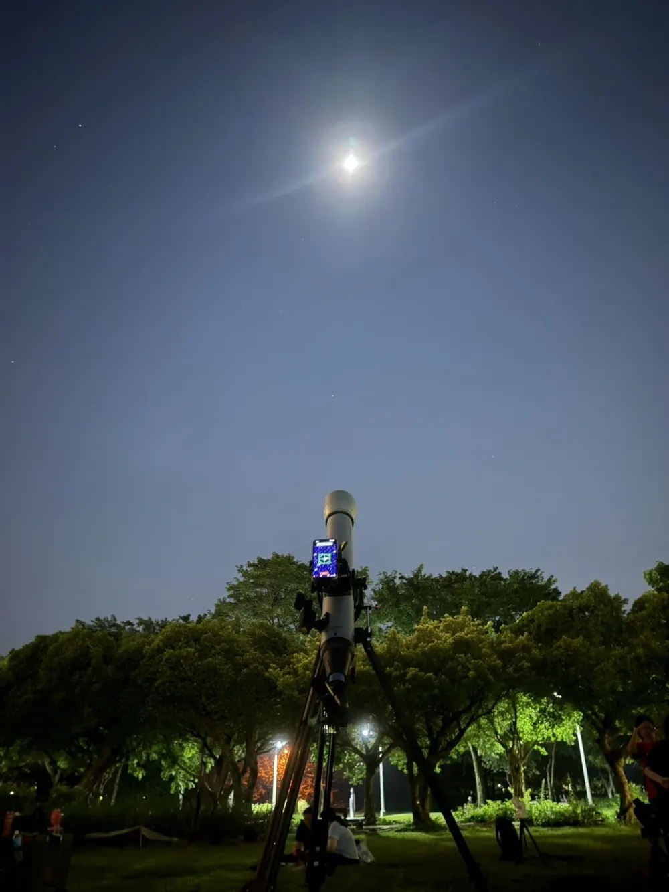

Daniel Tsen
Daniel TsenF1 Observatory GMU Young Scholars
Exoplanet follow-up photometry
A planet crossing its star blocks a small fraction of the light, so it shows up as a dip in the star’s brightness. TESS flagged TOI 5147.01 as a candidate. My part was checking it from the ground.
You are hereF1 Observatory

Key
On this page 5
F1.1TOI 5147.01
Light curves, and the NEB checks cleared
Calibrated light curves for TOI 5147.01. The nearby-eclipsing-binary checks came back clean.

F1.2Summer 2025
What I did with the frames
Scheduling through the Swarthmore transit finder, coordination through ExoFOP.
Observed the TOI 5147.01 field from the ground at the GMU Observatory, then worked through the FITS frames.
Plate-solved every frame: matched the detected stars against a reference catalog so each one gets its right ascension and declination.
Flagged artifacts like the streaks satellites leave when they cross the field during an exposure.
Calibrated with dark and flat frames.
Ran multi-aperture photometry in AstroImageJ and produced calibrated light curves.
Ran nearby-eclipsing-binary checks under the TFOP SG1 guidelines, with the NEB analysis macro and dmag-RMS plots.
F1.3Try it
The transit method
F1.4Off the clock
Still looking up
I own a Celestron StarSense Explorer LT 80AZ. I’m designing a 3D-printable equatorial mount and telescope in Fusion 360, based on the OpenAstroTech community’s work. The printing will be outsourced.

F1.5
Limits
- Scope
- This is follow-up photometry on a TESS candidate. It isn’t a discovery, and there’s no paper.
- NEB checks
- Clean checks rule out nearby stars as the source of the dip. They don’t confirm the planet.
F1.6
Credit
- Supervisor
- Prof. Peter Plavchan, Department of Physics & Astronomy, George Mason University.
- Data
- TOI 5147.01 is a TESS Object of Interest. The ground-based frames are from the GMU Observatory.